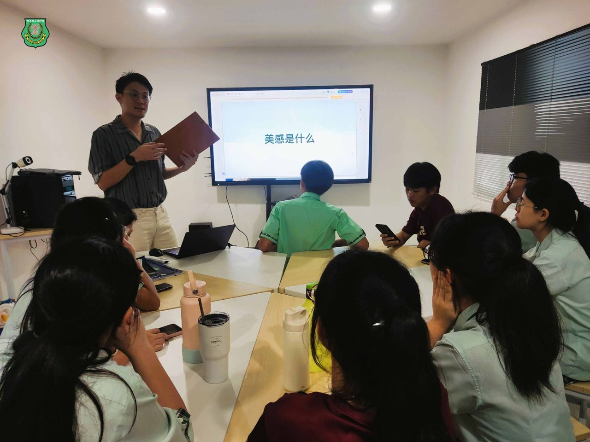
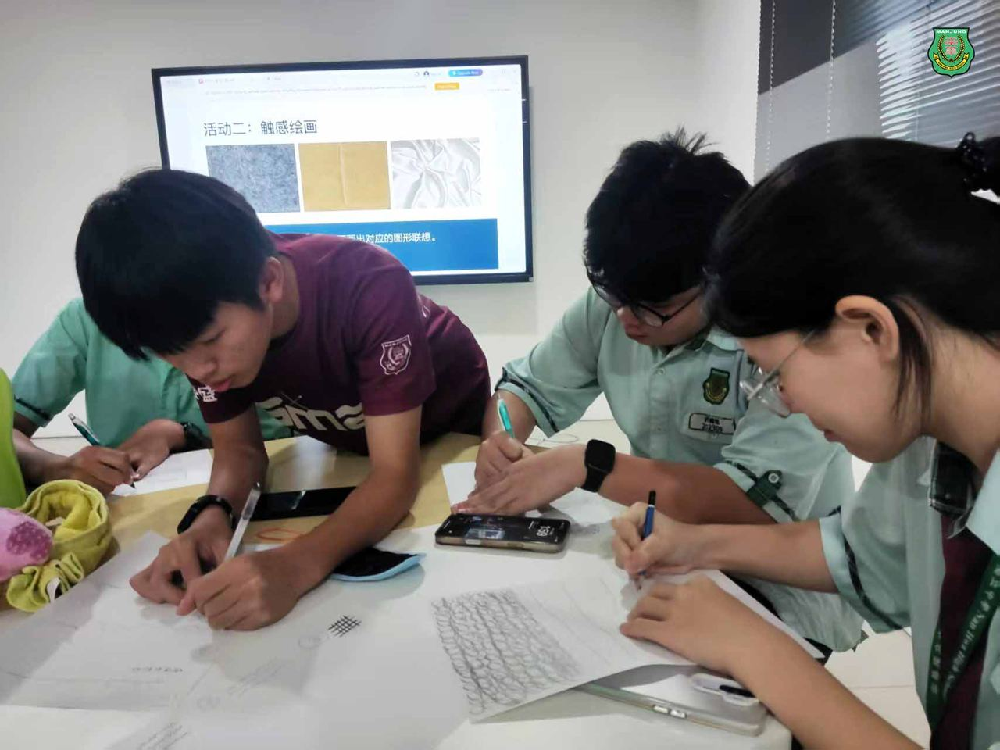
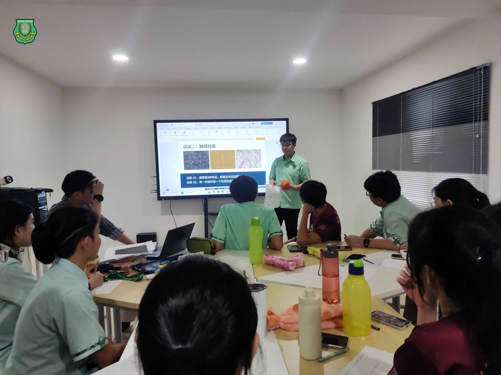
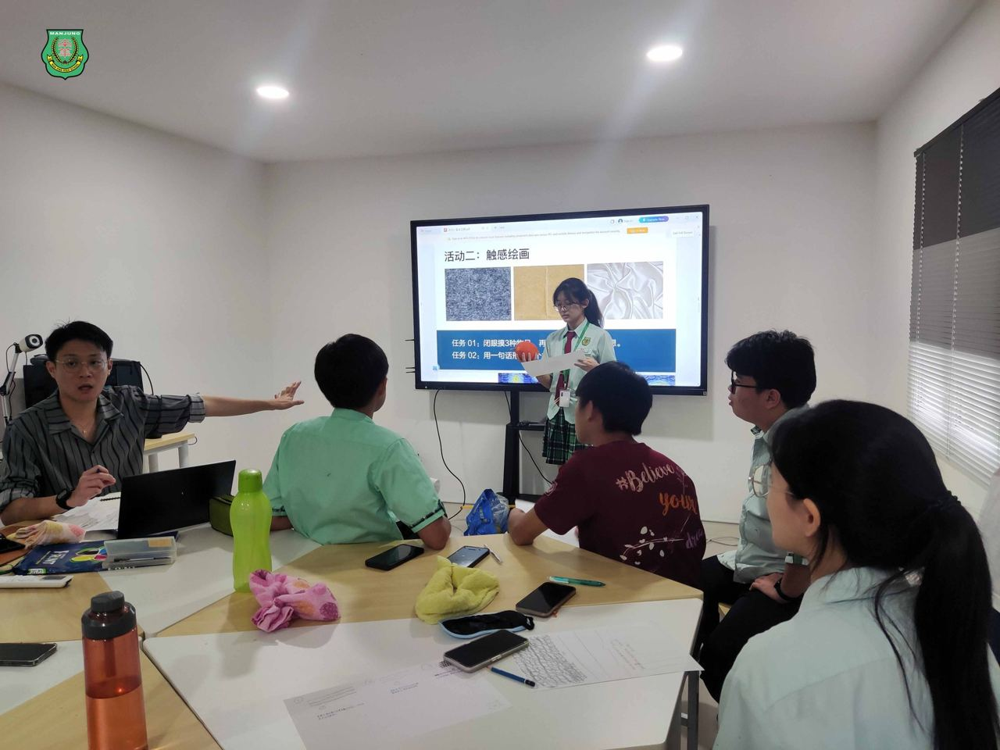
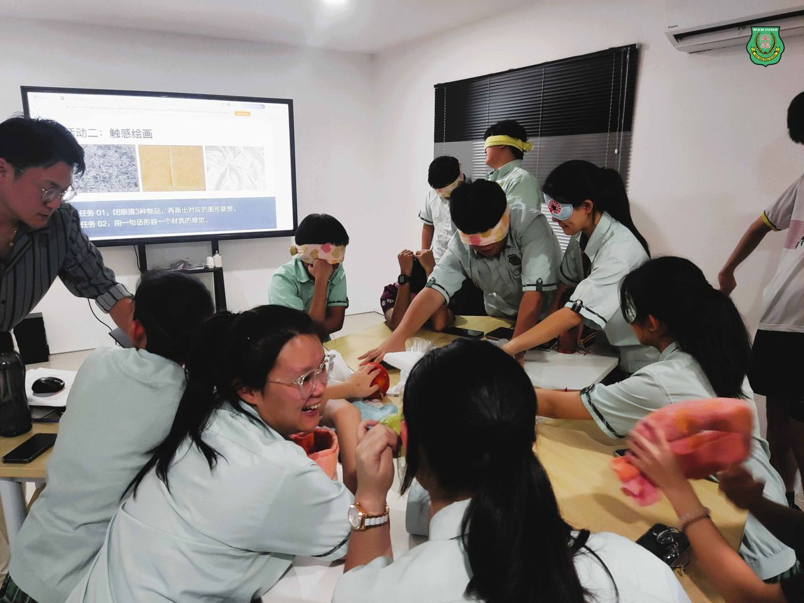
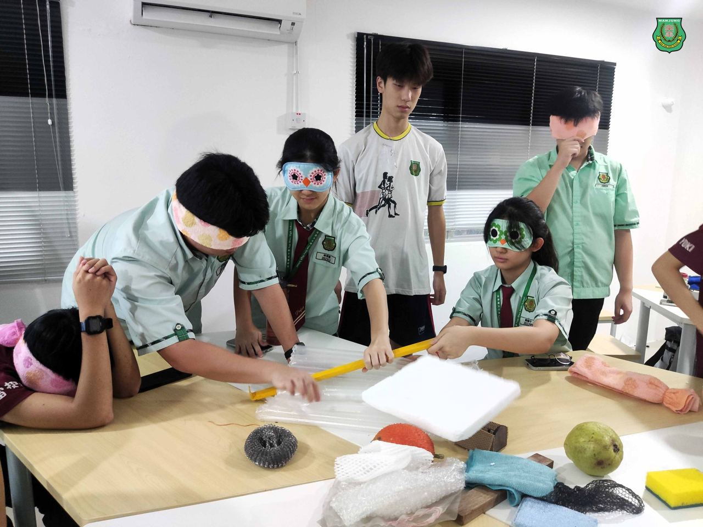
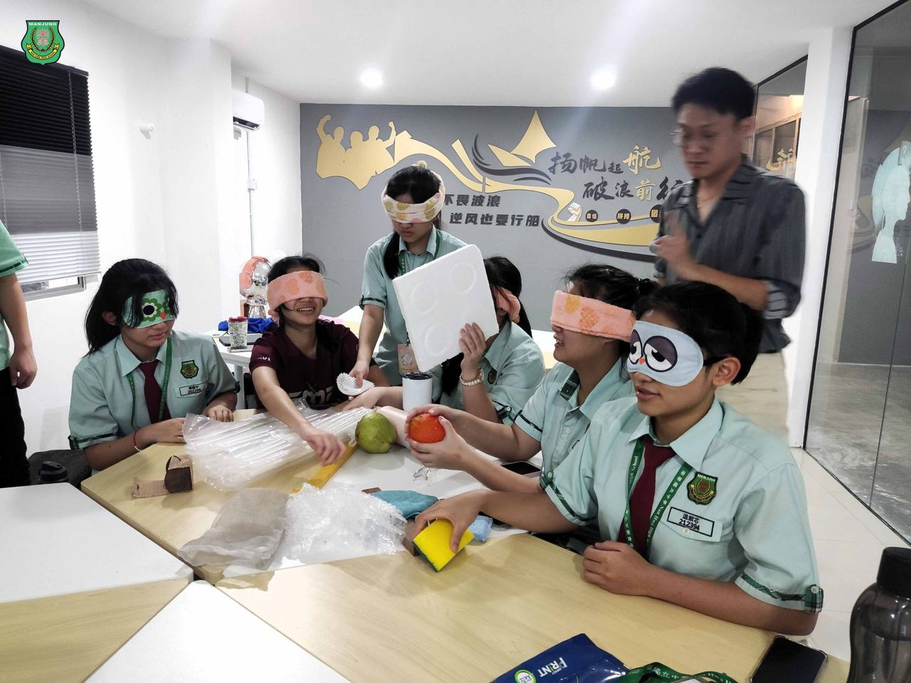
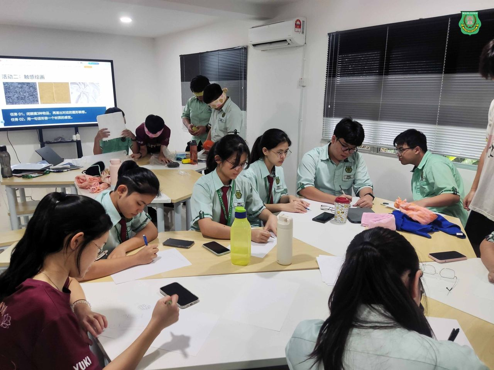

兼顾人文与科技
兼顾人文与科技
南华独中继“AI应用课”
开办全国首创美学正课
“美育不是装饰教育的花边，而是教育的灵魂。”
南华独中，以全国首创的美学正课，用一堂课回应未来，也点亮教育的初心，开启有温度的教育新页。这一举措被视为在人工智能高速发展的时代背景下，一项兼顾人文与科技、有温度的教育创举。
在当前马来西亚中学教育体系中，尚无学校将“美学”列为正式课程。但今年，南华独中走出历史性一步，成为首将“美学课”纳入正课体系、从初一延续至高三。这一决定，不仅是学校层级的教育突破，更象征着一所中学在时代浪潮中的教育宣言：科技当道之际，更要为孩子保留对“美”与“人”的感知力。让技术不掩盖人性，让速度不压抑深度。
校长陈丽冰博士指出：“我们选择开美学课，是选择不让教育变得冰冷。南华要教孩子如何生活、如何感受、如何思考人本与美感，而不仅仅是应试。”用美学补上教育的“缺席角落”。
南华独中率先制定六年一贯的《美学课》课程大纲，并编排每周固定课时，纳入学术评量体系，展现对“美育即教育本质”的高度认同。“美学课”融合审美素养、文化鉴赏、创造实践与数码素养于一体的全龄段课程，形成全国性罕见的课程模式。
课程聚焦四大核心能力：
1. 感知力（观察、聆听、品味生活之美）
2. 审美判断（理解美丑背后的文化与价值）
3. 创意表达（多媒材艺术实践与数码美感设计）
4. 文化素养（本土认同与全球视野并重）
在课程实践中，学生将接触包括摄影、影像叙事、AI美图辨析、空间设计、传统与现代美感融合等内容，鼓励思辨与创作。
时代的回答，不只在AI的速度，也在人的深度。在全球教育都在追赶STEM与AI技能的同时，美学课显得尤为珍贵。“教育愈来愈像工厂，我们更要留下一扇窗，让风吹进来，让学生看见天上的颜色的同时，可以停下来，等等自己的影子。不要让Ai与美学成为对立面，而且更好的运用Ai技术，传达美学思维的表达与呈现，而美学课将成为这重要的基石。”美学指导老师徐子轩如是说。
学生反馈表明，这门课程引导他们"第一次在课堂里问自己的感受"并"第一次认真地看窗外光影的变化"，这种通过知识引导带来的意外收获不仅使他们回归本心，更创造了前所未有的体验表达与分享机会。







